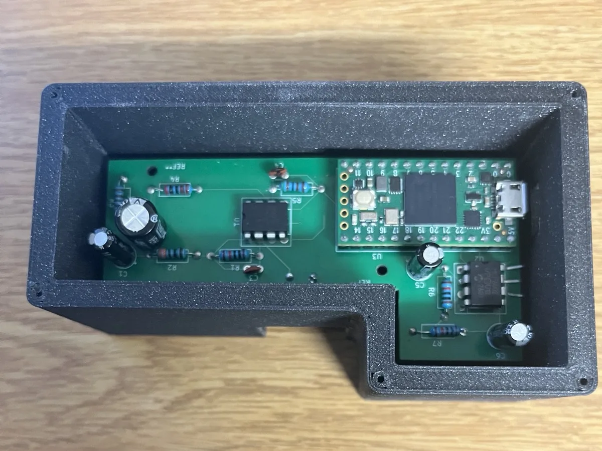
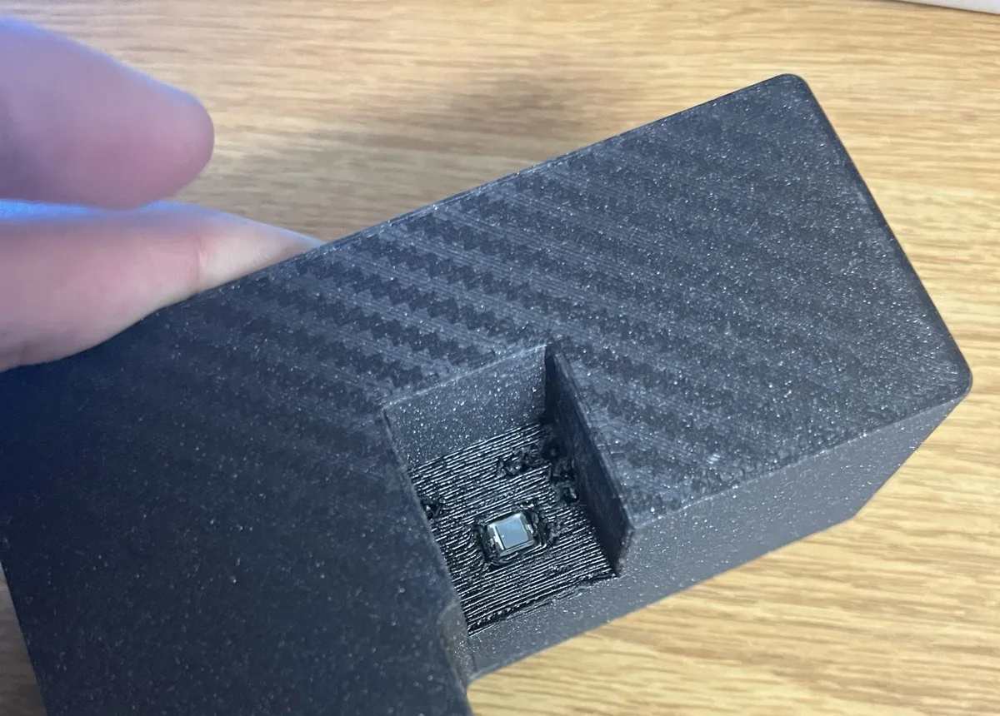
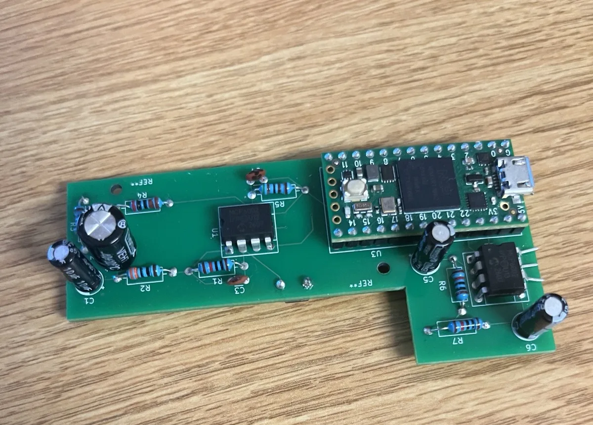
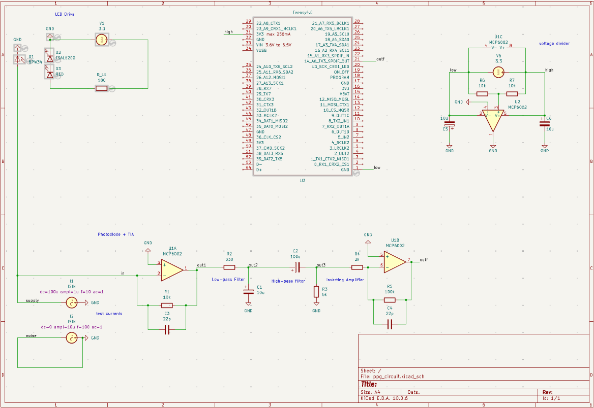
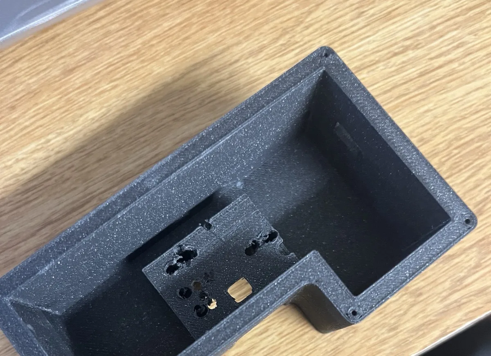

A finger-clip pulse sensor built from the photodiode up. Light passes through a fingertip, an analog front end pulls the heartbeat out of the photocurrent, and a Teensy 4.0 samples it at 250 Hz for heart rate now, with SpO2 and pulse-shape identification planned next.
Modelled PPG pulse for illustration: systolic peak followed by the dicrotic notch. These shape features are what the planned bio-ID stage will measure.


Photoplethysmography is the technique inside every pulse oximeter and fitness-band heart sensor. Blood volume in the fingertip swells with each heartbeat, so the amount of light that makes it through the tissue rises and falls in time with the pulse.
I picked it because a single device forces work across optics (LED wavelength, ambient light), analog design (transimpedance amplifier, filtering, gain staging), PCB layout, embedded firmware, and parametric CAD for a 3D-printed housing that holds everything in optical alignment.
Each stage below uses the component values in the KiCad schematic. The pulse is a small AC ripple riding on a large DC level from steady tissue absorption, so the chain converts current to voltage, strips the DC, removes noise, and then amplifies only what is left.
The analog section runs from a single 3.3 V supply. U2 buffers a 10 k/10 k divider to make a mid-supply reference, so the AC pulse can swing both ways around it. The schematic also carries ngspice test sources (100 µA DC + 1 µA at 10 Hz, plus 10 µA at 100 Hz as noise) used to simulate the chain before building it.
The filter values were chosen stage by stage with fc = 1/(2πRC): 0.32 Hz to drop the DC level and 48 Hz to drop mains and switching noise. Treated that way, the passband gain is 10 kV/A × 50 = 500 kV/A.
Solving the chain as one network tells a slightly different story. The inverting stage's input resistor R4 sits at a virtual ground, so it appears in parallel with R3 and the high-pass sees 1.43 kΩ instead of 5 kΩ. The C1 node is loaded the same way.
Resting heart rates still pass, but very slow pulses lose amplitude. Raising R4 and R5 together (same −50 gain) or buffering the high-pass output would bring the corner back near 0.3 Hz on the next board revision.

ppg_circuit.kicad_sch: scroll sideways on small screens

In a transmission-mode sensor, LED and photodiode alignment and ambient-light leakage matter as much as the circuit does. The housing is modular: the main body holds the finger channel and the PCB, separate holders seat the LED and photodiode across the finger, and a screw-fastened cover closes the bottom. The parts are printed in dark, opaque filament to keep room light away from the photodiode.

The firmware keeps a fixed 250 Hz sample clock. Subtracting the period instead of resetting the timer stops jitter in loop() from accumulating into drift, which would smear the FFT.
ppg_firmware/src/main.cpp · PlatformIO, Arduino framework
if (sinceLastSample >= SAMPLE_PERIOD_US) { // Subtract rather than reset to 0 so timing // doesn't drift if loop() runs long. sinceLastSample -= SAMPLE_PERIOD_US; int sample = analogRead(PPG_SIGNAL_PIN); Serial.println(sample); }
A Python tool reads the serial stream and draws an oscilloscope-style sweep with a live spectrum underneath. It picks the strongest peak inside 0.5–3.5 Hz and reports it as BPM.
ppg_firmware/tools/live_plot.py · numpy, matplotlib, pyserial
detrended = values - np.mean(values) # drop the DC bin windowed = detrended * np.hanning(n) # limit leakage mag = np.abs(np.fft.rfft(windowed)) freqs = np.fft.rfftfreq(n, d=1 / fs) band = (freqs >= 0.5) & (freqs <= 3.5) peak = freqs[band][np.argmax(mag[band])] bpm = peak * 60
IR LED, photodiode, TIA and filters on a breadboard. Firmware streaming samples and a live waveform and FFT plotter.
Schematic simulated, board laid out with a clean DRC, fabricated and hand-assembled. Modular housing printed, with screw fastening.
Multiplex the red and 940 nm LEDs from the MCU and compute oxygen saturation from the red/IR ratio.
Enroll 2–5 people by pulse width, rise time and dicrotic-notch timing, then match the wearer with a distance-based classifier on the MCU.
Fold the MCU and an SSD1306 OLED onto one board and finish the housing around it.
Background reading: J. Allen, “Photoplethysmography and its application in clinical physiological measurement,” Physiological Measurement 28 (2007).